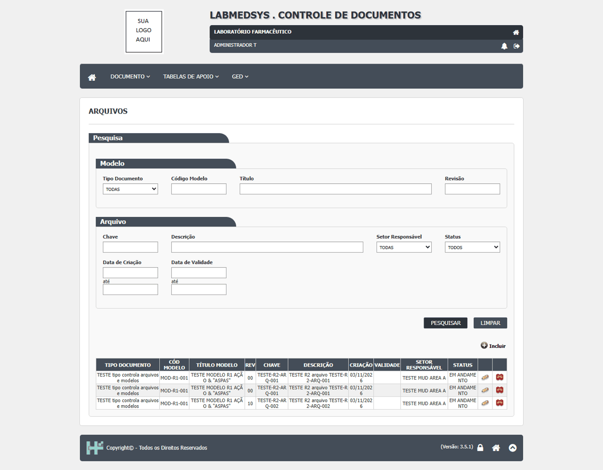
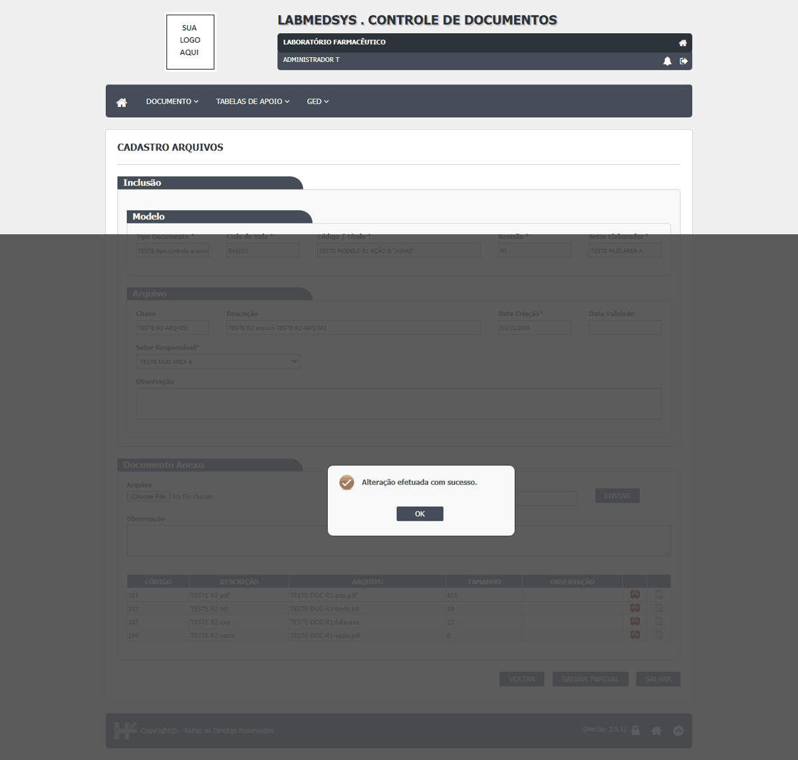
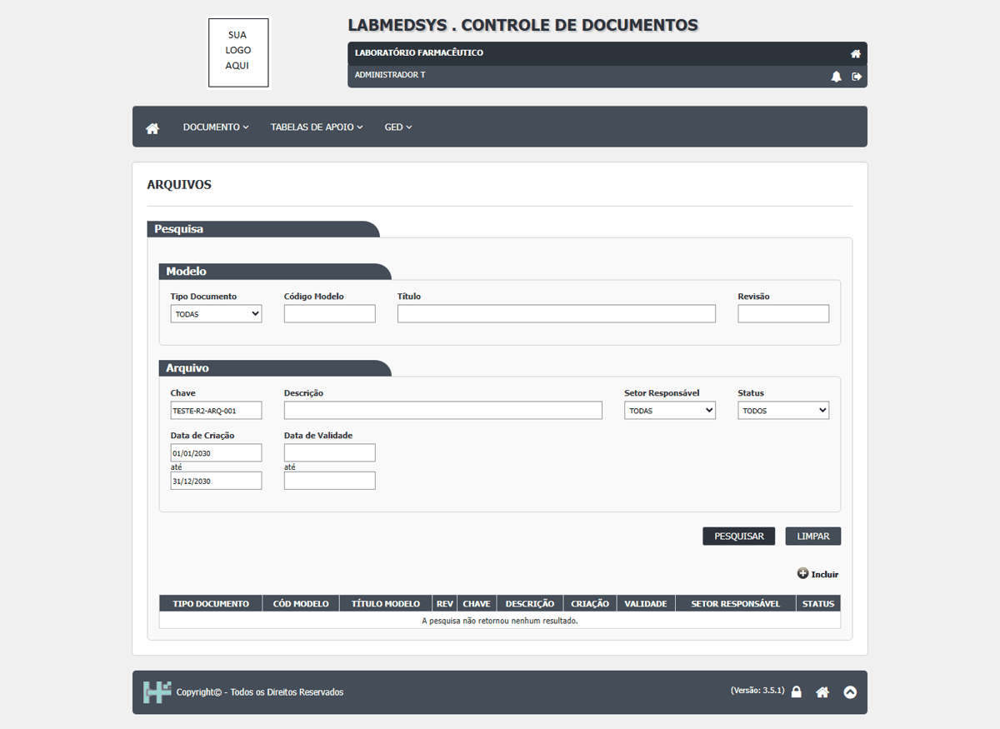

DV-DOC-036 · Cadastro Arquivos: aceita a mesma chave duas vezes e liga o arquivo a uma revisão do modelo que não está vigente
Dois arquivos foram incluídos com a mesma chave (TESTE-R2-ARQ-001) e os dois aparecem na lista. Um arquivo foi incluído ligado à revisão 1 do modelo, que não é a vigente. Anexos de qualquer tipo foram aceitos (PDF, texto, .exe e arquivo vazio), como já registrado na DV-DOC-025. Salvar parcial e Salvar (concluir) não pedem senha; ao concluir, a lista passa a mostrar só "Visualizar" (some Editar e Excluir).
Como reproduzir o erro, passo a passo
- Abrir Cadastro Arquivos; escolher o tipo TGED, o modelo MOD-R1-001, a revisão 0, a chave TESTE-R2-ARQ-001 e Salvar.
- Repetir com a mesma chave: aceita.
- Repetir com a revisão 1 do modelo (não vigente): aceita.
Esperado
Recusa de chave repetida e de revisão não vigente.
Obtido
Os três foram gravados "em andamento".
Evidência (captura da tela)

DV-DOC-038 · Arquivos: um arquivo concluído volta a "em andamento" pelo endereço de edição; chave só exata; datas incompletas não filtram; sem histórico na lista
O arquivo TESTE-R2-ARQ-001 estava CONCLUÍDO (a lista só oferecia Visualizar). Abrindo a edição pelo endereço e usando Salvar Parcial, o sistema respondeu "Alteração efetuada com sucesso." sem senha e o arquivo voltou a EM ANDAMENTO, com Editar e Excluir de novo. Na pesquisa, a chave só encontra o texto exato ("TESTE-R2" e "ARQ-001" não acham "TESTE-R2-ARQ-001"); com só a data "de" 01/01/2030 ou só a data "até" 01/01/2020 o arquivo continua na lista (as duas datas filtram). A lista de Arquivos não tem ícone de histórico (log) e a tela de visualização não mostra quem criou o arquivo, então o autor e a data de criação não puderam ser comparados antes e depois da edição. A exclusão (arquivo 2) pediu justificativa e funcionou. O usuário de outro setor (só consulta, setor E) não vê o arquivo.
Como reproduzir o erro, passo a passo
- Concluir um arquivo (Salvar) e conferir que a lista só mostra Visualizar.
- Abrir /Documento/DocGestao/ArquivoEditar?Id=1 e clicar em Salvar Parcial; confirmar.
- Pesquisar a chave: o arquivo está EM ANDAMENTO com Editar e Excluir.
Esperado
Arquivo concluído não editável; pesquisa e histórico úteis.
Obtido
Reaberto sem senha; filtros parciais; sem log na lista.
Evidência (captura da tela)

